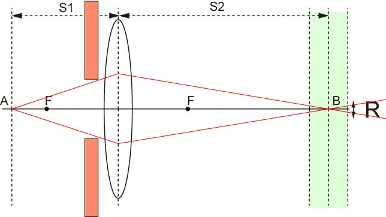
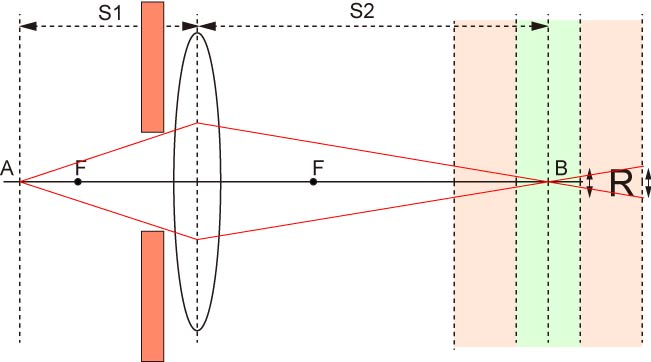
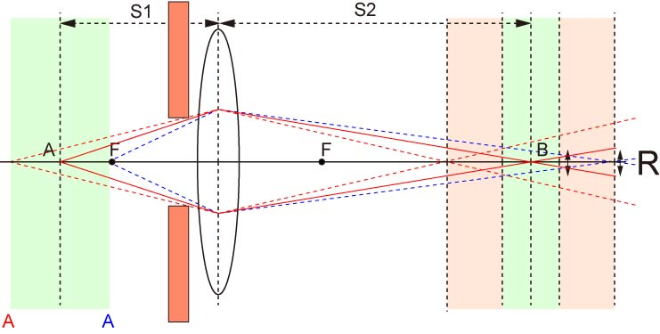

では，この状態で光がレンズを通過する場所を制限してしまいましょう．

すると，明らかに，さきほどの状態とは変わっていますね．
光の軌跡が細くなったので，我々が焦点が合っている，と定義したRの光の広がりはもっと広くなります．

今度は，ピンクのエリアまで焦点が合うことになります．
つまり，物体Aの前後，AからAまで焦点が合うことになります．

つまり，
レンズの径によって被写界深度が変化する
レンズを絞るほど被写界深度は深くなる
ということになります．
この，絞る，というものは，顕微鏡の世界においては，
NAを小さくする
と同じ意味としてとらえていいので，
高いNAのレンズは被写界深度が浅い
となるのです．
高NA（一般的に高倍率）のレンズほど，ピントが併せにくくなるのは，このためです．
では，実際に被写界深度の違いを見てみましょう．